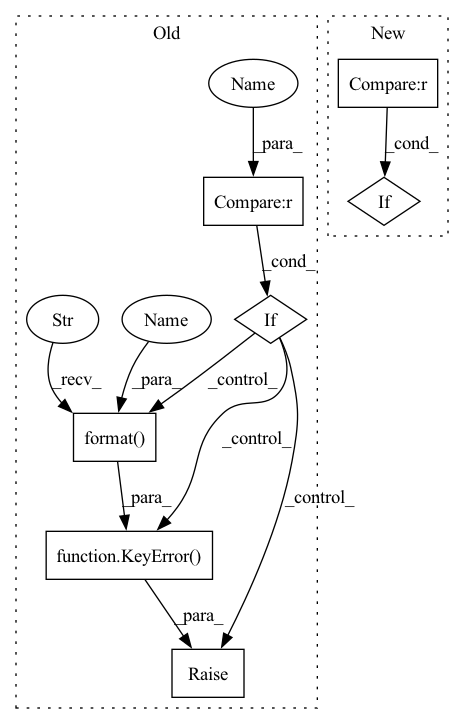

Pattern ID :34972
Before Change
self._hooks[name] = hook
if after is not None:
if after not in self._hooks :
raise KeyError(
"hook "{}" not found in registered hooks".format(after ) )
matched = False
for key in list(self._hooks.keys()):
if key == after:After Change
assert isinstance(hook, Hook)
if hook in self._hooks :
raise ValueError("hook "{}" exists".format(hook.name))
if before is not None:In pattern: SUPERPATTERN
Frequency: 3
Non-data size: 7
Instances Fragment ID: 100057098
Project Name: yeliudev/nncore
Commit Name: 388797bb64137636c57252b73efa8715ad9e4068
Time: 2020-03-12
Author: goolhanrry@gmail.com
File Name: nncore/engine/engine.py
M Class Name: Engine
N Class Name: Engine
M Method Name: register_hook(3)
N Method Name: register_hook(4)
M Parent Class: object
N Parent Class: object
M File Name: nncore/engine/engine.py
N File Name: nncore/engine/engine.py
M Start Line: 37
M End Line: 65
N Start Line: 37
N End Line: 44
Before Change
self.register(o)
return
name = obj.__name__
if name in self._items :
raise KeyError("{} is already registered in {}".format(
name, self.name) )
self._items[name] = obj
return obj
After Change
for o in obj:
self._register(o, name=name)
return
elif obj is not None :
self._register(obj, name=name)
return
Fragment ID: 100057099
Project Name: yeliudev/nncore
Commit Name: ccf003ff674e39e6632fdb111fe3c1862a7d1c65
Time: 2020-10-21
Author: yeliudev@outlook.com
File Name: nncore/utils/registry.py
M Class Name: Registry
N Class Name: Registry
M Method Name: register(3)
N Method Name: register(2)
M Parent Class: object
N Parent Class: object
M File Name: nncore/utils/registry.py
N File Name: nncore/utils/registry.py
M Start Line: 52
M End Line: 64
N Start Line: 61
N End Line: 74
Before Change
by default.
assert isinstance(hook, Hook)
name = name or getattr(hook, name, None) or hook.__class__.__name__
if name in self._hooks :
raise KeyError("hook "{}" has been registered before".format( name) )
self._hooks[name] = hook
if after is not None:
if after not in self._hooks:After Change
assert isinstance(hook, Hook)
if hook in self._hooks :
raise ValueError("hook "{}" exists".format(hook.name))
if before is not None: Fragment ID: 100057096
Project Name: yeliudev/nncore
Commit Name: 388797bb64137636c57252b73efa8715ad9e4068
Time: 2020-03-12
Author: goolhanrry@gmail.com
File Name: nncore/engine/engine.py
M Class Name: Engine
N Class Name: Engine
M Method Name: register_hook(3)
N Method Name: register_hook(4)
M Parent Class: object
N Parent Class: object
M File Name: nncore/engine/engine.py
N File Name: nncore/engine/engine.py
M Start Line: 37
M End Line: 65
N Start Line: 37
N End Line: 44
Before Change
def init_model(name, *args, **kwargs):
if name not in list(__model_factory.keys()) :
raise KeyError("Unknown model: {}".format( name) )
return __model_factory[name](*args, **kwargs)After Change
def init_model(name, *args, **kwargs):
avai_models = get_names()
if name not in avai_models :
raise KeyError("Unknown model: {}. The available models are: {}".format(name, avai_models))
return __model_factory[name](*args, **kwargs) Fragment ID: 100057097
Project Name: vlsomers/bpbreid
Commit Name: 03d0674dcbf28020dc2cc597137154c0250e8b44
Time: 2019-03-15
Author: k.zhou@qmul.ac.uk
File Name: torchreid/models/__init__.py
M Class Name: AnonimousClass
N Class Name: AnonimousClass
M Method Name: init_model(1)
N Method Name: init_model(1)
M Parent Class:
N Parent Class:
M File Name: torchreid/models/__init__.py
N File Name: torchreid/models/__init__.py
M Start Line: 62
M End Line: 64
N Start Line: 62
N End Line: 65